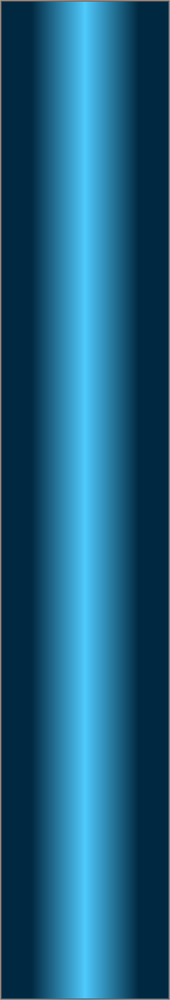
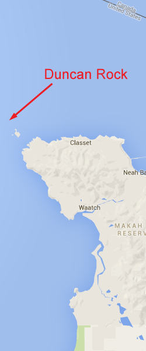
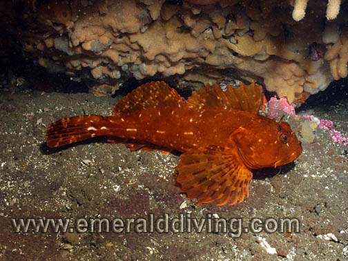
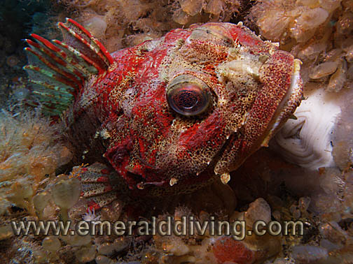
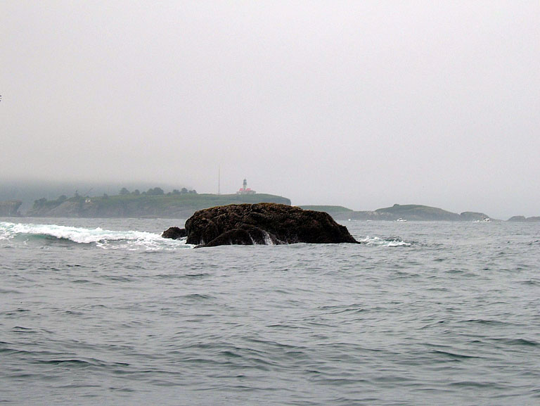

<!doctype html>
<html>
<head>
<meta charset="utf-8">
<title>Duncan Rock</title>
<meta name="generator" content="WYSIWYG Web Builder - http://www.wysiwygwebbuilder.com">
<link href="Emerald_Diving.css" rel="stylesheet">
<link href="duncan_frame.css" rel="stylesheet">
<script>
function onChangeGoMenu2(){var a=document.getElementById('GoMenu2-select'),b=a.options[a.selectedIndex].value,c=a.options[a.selectedIndex].className;a.selectedIndex=0;a.blur();b&&(NewWin=window.open(b,c),window.NewWin.focus())};
</script>
</head>
<body>
<script>
var gaJsHost = (("https:" == document.location.protocol) ? "https://ssl." : "http://www.");
document.write(unescape("%3Cscript src='" + gaJsHost + "google-analytics.com/ga.js' type='text/javascript'%3E%3C/script%3E"));
</script>
<script>
try {
var pageTracker = _gat._getTracker("UA-15987748-1");
pageTracker._trackPageview();
} catch(err) {}</script>

<div id="container">
<div id="wb_Shape154" style="position:absolute;left:674px;top:653px;width:375px;height:2197px;z-index:3;">
</div>
<div id="wb_MasterPage1" style="position:absolute;left:0px;top:2px;width:1049px;height:62px;z-index:4;">
<div id="wb_Shape1" style="position:absolute;left:0px;top:5px;width:1049px;height:57px;z-index:0;">
</div>
<div id="wb_Text2" style="position:absolute;left:20px;top:5px;width:185px;height:16px;z-index:1;">
<span style="color:#FFFFFF;font-family:Arial;font-size:13px;"><em><a href="./local_sites_jf.html" target="_self">Return to Western Strait Map</a></em></span></div>
<div id="wb_GoMenu2" style="position:absolute;left:800px;top:5px;width:225px;height:25px;z-index:2;">
<form id="GoMenu2" role="menu">
<select id="GoMenu2-select" name="GoMenu2" onchange="onChangeGoMenu2()">
<option class="_self" value="#" selected>Select a Dive Site</option>
<option class="_self" value="./diamond_knot_frame.html" role="menuitem">Diamond Knot</option>
<option class="_self" value="./duncan_frame.html" role="menuitem">Duncan Rock</option>
<option class="_self" value="./mushroom_frame.html" role="menuitem">Mushroom Rock</option>
<option class="_self" value="./sekiu_frame.html" role="menuitem">Sekiu Jetty Rocks</option>
<option class="_self" value="./slant_frame.html" role="menuitem">Slant Rock</option>
<option class="_self" value="./stellar_frame.html" role="menuitem">Stellar Rock</option>
<option class="_self" value="./tatoosh_canyon_frame.html" role="menuitem">Tatoosh Canyon</option>
<option class="_self" value="./third_beach_frame.html" role="menuitem">Third Beach Pinnacle</option>
<option class="_self" value="./tiger_ridge_frame.html" role="menuitem">Tiger Ridge</option>
<option class="_self" value="./waadah_island_fingers.html" role="menuitem">Waadah Island Fingers</option>
</select>
</form>
</div>
</div>
<div id="wb_Text22112" style="position:absolute;left:160px;top:568px;width:324px;height:14px;z-index:5;">
<span style="color:#000000;font-family:Arial;font-size:11px;">Double click to edit</span></div>
<div id="wb_Text1654" style="position:absolute;left:7px;top:1227px;width:477px;height:2px;z-index:6;">
&nbsp;</div>
<div id="wb_Text4" style="position:absolute;left:0px;top:671px;width:555px;height:2px;z-index:7;">
&nbsp;</div>
<div id="wb_Text5" style="position:absolute;left:0px;top:655px;width:661px;height:2179px;z-index:8;">
<span style="color:#FFFFFF;font-family:Arial;font-size:15px;"><strong>Topography: </strong>Offshore dive on a rock pinnacle strewn with walls, spires, and canyons lined with a broken shell substrate.<br></span><span style="color:#FFFFFF;font-family:'Times New Roman';font-size:15px;"><br></span><span style="color:#FFFFFF;font-family:Arial;font-size:15px;"><strong>Cape Flattery marine life rating: </strong>4<strong><br></strong><br><strong>Cape Flattery structure rating: </strong>5<br><br><strong>Diving depth: </strong>80-95 feet.<br> <br><strong>Highlight: </strong>Intense offshore dive amid incredible structure. Robust populations of diverse invertebrates. Chance to see adult yelloweye rockfish.<br><br><strong>Skill level: </strong>Extreme advanced<br><br><strong>GPS coordinates: </strong>N48° 24.457&nbsp; W124° 44.540<br><br><strong>Access by boat: </strong>Duncan Rock is an isolated offshore pinnacle situated between the Pacific Ocean and the Strait of Juan de Fuca. The pinnacle is located about a mile northwest of Tatoosh Island. The rock is visible from a couple miles away on clear days with light wind and swell.<br><br><strong>Dive profile detail: </strong>Duncan Rock is an extreme dive. This dive starts with planning around current and weather. Excessive swell, high wind, strong current, or poor visibility topside ends the dive before it even begins. Conditions have to be just right. <br><br>I dive this location when the swell is 6 feet or less, and preferably less. Winds must be calm, and no fog can be present as the live boat must be able to track drifting divers.<br><br>Assuming surface conditions are relatively calm, the current rushing by Duncan Rock will often leave a “V” shaped wake in the water.&nbsp; On a flood, this surface wake is visible on the northwest corner.&nbsp; On the ebb, it is on the western side of the rock. I tyically target my dives inside this wake<br><br>My pre-dive activities by drifting the boat through the “V” shaped wake a few times. I drift through this “V” to gauge current strength and direction, and watch how the underwater topography changes relative to the rock. Regardless of which side of the rock I am diving, I prefer to put in relatively close to the rock in 30-50 feet of water.&nbsp; I abort the dive if I don’t see bottom by 80 feet. I immediately deploy my signal marker buoy and finger spool and begin a free ascent, complete with safety stop. <br><br>The terrain on the northeast side of Duncan Rock is a mixed bag of spires, rock walls, canyons, channels, and rocky reefs. Most of the substrate immediately behind the rock does get deeper thatn about 85 feet.&nbsp; The surrounding substrate is covered with white broken shells. I wind my way through the structure and choose my path based on current. I have found areas with little to no current on many dives. I have encountered moderate to heavy current on other dives. I never know what to expect until I get to depth, but stay within the confines of the current. Sometimes this allows me to explore a large area.&nbsp; Other times I end up pinned behind a small wall.<br><br>I work my way up a nearby wall that gives me shelter from the current once my air supply or no-deco time runs low. I occasionally find structure that runs up to safety stop depths. I more often end up at the top of a wall in about 50 feet of water. I then prepare my signal marker buoy and finger spool for deployment before launching into the current and beginning a free ascent. I shoot my signal marker buoy as soon as I leave the wall so the boat can follow my drift. <br><br>The west side of Duncan Rock offers a completely different dive and is by far my favorite.&nbsp; The topography quickly drops from the rock to over 100 fsw.&nbsp; Several large canyons exist on the west side with invertebrate encrusted walls.&nbsp; Large boulders and a shell bottom reside between the canyon walls and provides excellent habitat for fish.&nbsp; I follow a canyon down slope until I reach my maximum operating depth or my no-deco time or air supply runs low.&nbsp; I then run the reciprocal course back to the rock where I can easily ascent to safety stop depths in the shelter of the rock.&nbsp; I make certain to take a very good compass bearing while descending so I know exactly which direction to get back to the rock.&nbsp; Many of the rock formation on either side of the rock do not extend to safety stop depths.&nbsp; <br><br>I agree upon a maximum dive time with the boat driver before beginning the dive. I also carry a small waterproof VHF radio in a waterproof Otterbox in my dry suit pocket in case the boat can’t locate me when I surface. <br><br>Visibility at this site varies greatly. Typical visibility is 30-40 feet, however days with over 50 of visibility are not uncommon. Thick plankton sometimes gathers in the lee of the rock and obscures visibility. The plankton is usually limited to the top 20 or 30 feet of water, below which visibility opens up.<br><br>I would take only a handful of people I know to dive this site, and even fewer that I would let operate the boat topside. Top notch surface support is key for diving Duncan Rock safely.<br><br><strong>My preferred gas mix: </strong>EAN 34 <br><strong><br>Current observations: </strong><br><br><em>Current Station: </em>Strait of Juan de Fuca (Entrance)<br><em>Slack before ebb:&nbsp; </em>+150 minutes, at least on minor floods turning to minor ebbs<br><br>I was originally instructed to only dive this site on a flood.&nbsp; The rationale was that if a diver is blown off the rock on a flooding tide, the current will carry them into the Strait of Juan de Fuca instead of out to the Pacific Ocean. However, I now prefer to dive this site just after slack on very mild ebbs (less than 0.8 knots).&nbsp; <br><br>The direction of the current is usually evident by the direction of the “V” shaped wake formed by the current rushing by the rock.&nbsp; Again, I make a point of diving in this “V”.&nbsp; If the surface conditions are to rough to see the ‘V”, I take this as a sign to dive somewhere else.<br><br><br><strong>Boat Launch:<br></strong></span><span style="color:#FFFFFF;font-family:Symbol;font-size:15px;"> <br></span><span style="color:#FFFFFF;font-family:Arial;font-size:15px;">Neah Bay Marina boat ramp. Approximately 7 miles from the dive site.<br><br><strong>Facilities: </strong>None<br><strong><br>Hazards: <br><br></strong>Current: Strong current is always present at this site. The current can be partially negated by diving in the lee of the rock.<br><br>Exposure: Duncan Rock is a very exposed to wind and weather from any direction. Surface conditions can and do change quickly.<br><br>Offshore location: The nearest land (other than the rock) is over a mile away.<br><br>Swell: A six foot swell is common, even in summer. Swell in excess of 10 feet often plagues this area. Large swell makes it difficult for a small boat to spot a surfaced diver, even if that diver has a signal maker buoy.<br><br>Fog: Fog is a common problem, especially in fall. A thick fog makes it near impossible to track drifting divers.<br><br>Fishing boats: This area is heavily fished for salmon and bottom fish in summer months. More than thirty boats may be fishing near the rock during fishing season if conditions are good.<br><br><strong>Marine life: </strong>The marine life around Duncan Rock is simply fantastic. Congregations of blue, black, and yellowtail rockfish hover in areas out of the current. Duncan Rock also provides one of the best opportunities to find adult yelloweye rockfish, a protected species. An adult of 30” may be well over 100 years old.<br><br>The invertebrate life at Duncan Rock is just amazing. Many of the invertebrates are supersized. Different species of invertebrates cram themselves onto every available square inch of solid structure and provide divers with a collage of color. Orange ball sponges, crimson anemones, mussels over 8” in length, red gorgonians, rock scallops, orange finger sponges, urticina anemones, aggregate sponges, giant barnacles, and brown deadman finger sponges are but a few of the animals that thrive in the heavy current around this rock.<br><br></span></div>
<div id="wb_Image1" style="position:absolute;left:797px;top:58px;width:244px;height:594px;z-index:9;">
</div>
<div id="wb_Image3" style="position:absolute;left:682px;top:682px;width:352px;height:262px;z-index:10;">
</div>
<div id="wb_Image4" style="position:absolute;left:682px;top:947px;width:352px;height:262px;z-index:11;">
</div>
<div id="wb_Image5" style="position:absolute;left:682px;top:1212px;width:352px;height:262px;z-index:12;">
</div>
<div id="wb_Image6" style="position:absolute;left:682px;top:1477px;width:352px;height:262px;z-index:13;">
</div>
<div id="wb_Image7" style="position:absolute;left:682px;top:2006px;width:352px;height:262px;z-index:14;">
</div>
<div id="wb_Text6" style="position:absolute;left:869px;top:923px;width:164px;height:16px;text-align:right;z-index:15;">
<span style="color:#FFFFFF;font-family:Arial;font-size:13px;"><em>Puget Sound King Crab</em></span></div>
<div id="wb_Text7" style="position:absolute;left:598px;top:1220px;width:150px;height:16px;text-align:right;z-index:16;">
<span style="color:#FFFFFF;font-family:Arial;font-size:13px;"><em>Cabezon</em></span></div>
<div id="wb_Text8" style="position:absolute;left:677px;top:1188px;width:155px;height:16px;text-align:right;z-index:17;">
<span style="color:#FFFFFF;font-family:Arial;font-size:13px;"><em>Opalescent Nudibranch</em></span></div>
<div id="wb_Text9" style="position:absolute;left:894px;top:1458px;width:139px;height:16px;text-align:right;z-index:18;">
<span style="color:#FFFFFF;font-family:Arial;font-size:13px;"><em>Sea Nettle Jellyfish</em></span></div>
<div id="wb_Text10" style="position:absolute;left:693px;top:1958px;width:139px;height:16px;z-index:19;">
<span style="color:#FFFFFF;font-family:Arial;font-size:13px;"><em>Yellowtail Rockfish</em></span></div>
<div id="wb_Text12" style="position:absolute;left:691px;top:662px;width:357px;height:15px;text-align:center;z-index:20;">
<span style="color:#FFFFFF;font-family:Arial;font-size:12px;"><em>Underwater imagery from this site</em></span></div>
<div id="wb_Image8" style="position:absolute;left:682px;top:1742px;width:352px;height:262px;z-index:21;">
</div>
<div id="wb_Text1432" style="position:absolute;left:693px;top:1753px;width:142px;height:16px;z-index:22;">
<span style="color:#FFFFFF;font-family:Arial;font-size:13px;"><em>Orange Finger Sponge</em></span></div>
<div id="wb_Image2" style="position:absolute;left:0px;top:58px;width:794px;height:594px;z-index:23;">
</div>
<div id="wb_Text3" style="position:absolute;left:22px;top:66px;width:527px;height:55px;z-index:24;">
<span style="color:#009300;font-family:Arial;font-size:48px;">Duncan Rock</span></div>
<div id="wb_Image9" style="position:absolute;left:682px;top:2271px;width:352px;height:262px;z-index:25;">
</div>
<div id="wb_Image10" style="position:absolute;left:682px;top:2536px;width:352px;height:262px;z-index:26;">
</div>
<div id="wb_Text143" style="position:absolute;left:690px;top:1484px;width:142px;height:16px;z-index:27;">
<span style="color:#FFFFFF;font-family:Arial;font-size:13px;"><em>Red Irish Lord</em></span></div>
<div id="wb_Text11" style="position:absolute;left:890px;top:2244px;width:142px;height:16px;text-align:right;z-index:28;">
<span style="color:#FFFFFF;font-family:Arial;font-size:13px;"><em>Urticina Anemone</em></span></div>
<div id="wb_Text13" style="position:absolute;left:639px;top:2281px;width:142px;height:16px;text-align:right;z-index:29;">
<span style="color:#FFFFFF;font-family:Arial;font-size:13px;"><em>Nanaimo Dorid</em></span></div>
<div id="wb_Text14" style="position:absolute;left:890px;top:2550px;width:142px;height:16px;text-align:right;z-index:30;">
<span style="color:#FFFFFF;font-family:Arial;font-size:13px;"><em>China Rockfish</em></span></div>
</div>
</body>
</html>